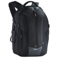

此款背包是为了舒适与安全而设计的双肩背包。想要携带较长的长镜头和另一组闪光灯？没问题。只要将扩容拉鍊拉开就可以随需要调整容量，装备依然可以得到最佳的保护。侧边有快速存取系统，只要解开扣子往后拉开就可存取装备，往前拉扣上即可锁住。前方有超大开口，适合旅游时携带和整理整套的摄影装备。具有以下特点：三脚架快速调整固定带；背部透气衬垫，背负舒适；外部配件袋，D型环可悬挂配件；附防雨罩；可容纳15寸笔记本电脑。